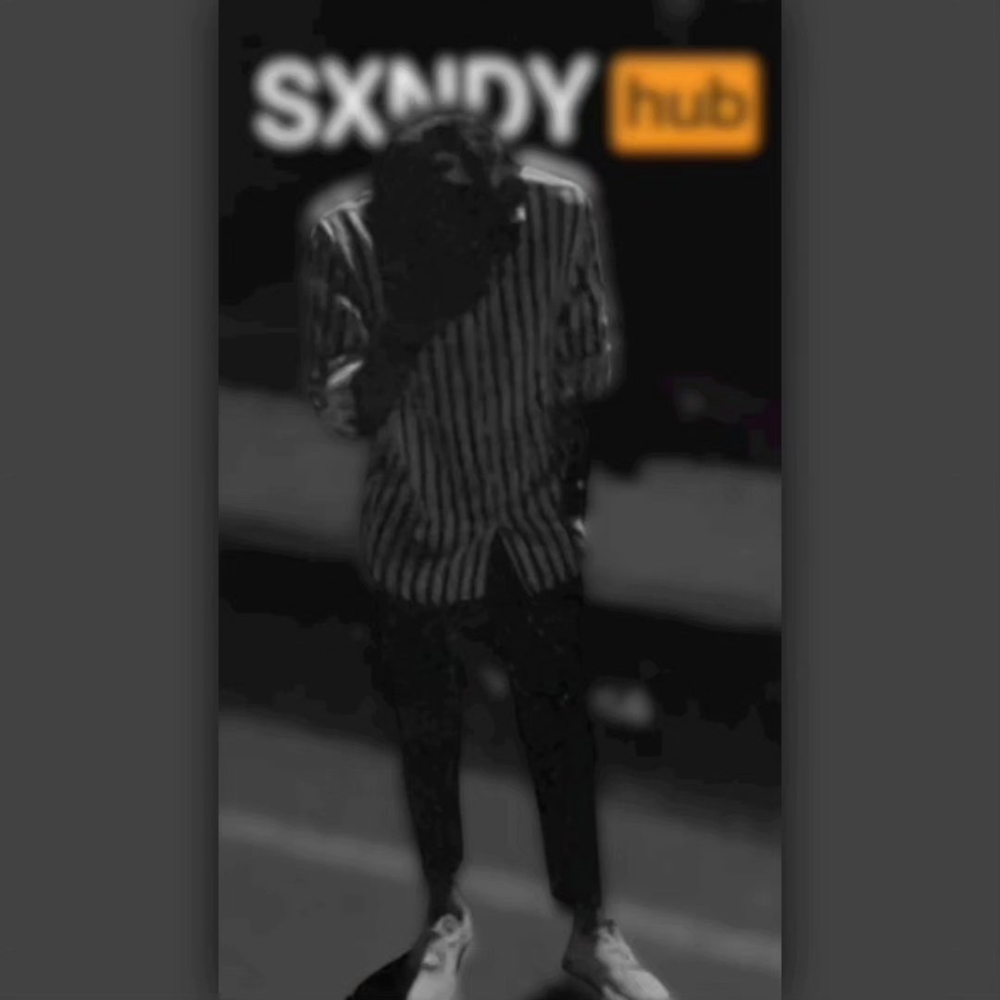

Fake Tube - YouTube Inspired Web Project
A modern, interactive video streaming platform built with HTML, CSS, and JavaScript.

Fake Tube - A YouTube-Inspired Platform
Fake Tube is a fully responsive YouTube-inspired web application designed for showcasing videos with an engaging and intuitive user interface. This project was built using modern web technologies like HTML, CSS, JavaScript, and Bootstrap.
The platform features smooth animations, an optimized video grid layout, hover effects, and a dark/light mode switch to enhance the user experience.
With a focus on UI/UX design, Fake Tube provides a clean and user-friendly layout, similar to YouTube, making it easy to navigate and explore content.
UI/UX is at the heart of modern web design. Fake Tube is a creative way to experiment with front-end development and web animations.
Santhosh
Web Developer
The project was built with a mobile-first approach, ensuring seamless performance across different devices.
Project Information
- Category: Web Development, UI/UX Design
- Tools Used: HTML, CSS, JavaScript, Bootstrap
- Features: Dark Mode, Video Grid Layout, Smooth Animations
- View Project